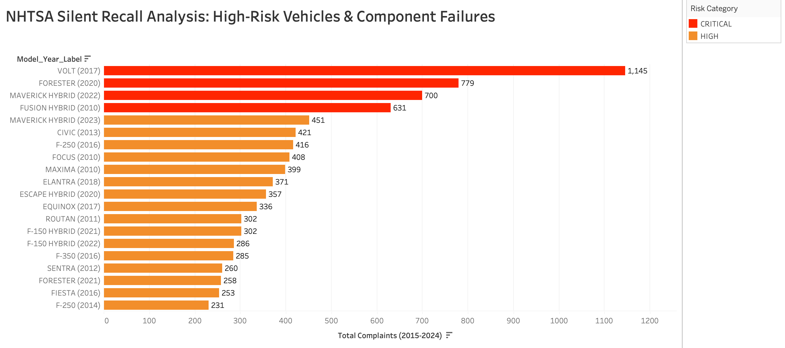
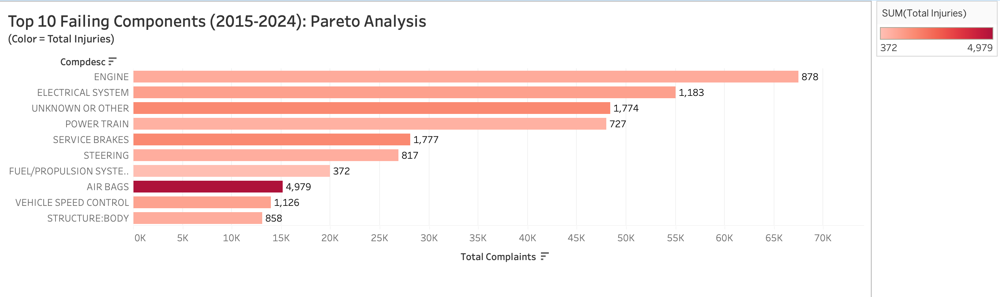
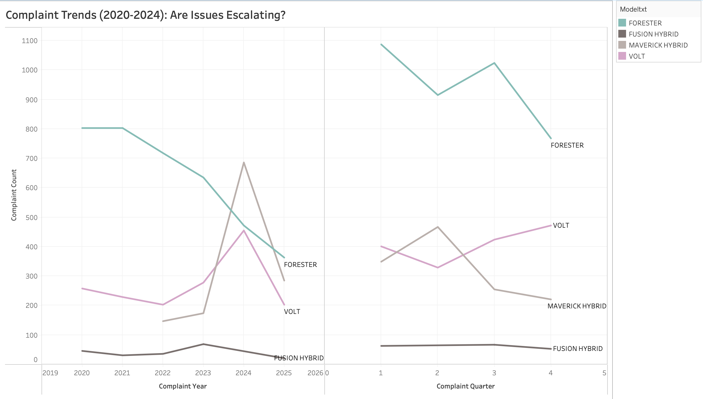

TL;DR
20 vehicle models with 200+ complaints each, zero recalls issued.
Analyzed 500K+ NHTSA complaints using PostgreSQL and built a Tableau dashboard revealing $3.04B in total costs from top 10 failing components.
Key finding: 2017 Chevy Volt has 1,145 complaints with complaint rates rising in Q4 2024 as vehicles age, a ticking time bomb.
Business case: 10% reduction in top component failures = $304M annual savings.
The Problem
Here's something that shouldn't happen: a car gets 1,145 complaints about its electrical system failing, and the manufacturer does nothing. No recall, no fix, no acknowledgment. That car is the 2017 Chevrolet Volt, and it's not alone.
I analyzed half a million NHTSA safety complaints and found 20 vehicle models with over 200 complaints each and zero recalls issued. Even more troubling: for many of these vehicles, complaint rates are increasing as the cars age, not decreasing.
This isn't just bad for consumers, it's expensive for manufacturers. Using industry-standard cost estimates, I calculated that the top 10 failing components have generated $3.04 billion in total costs (complaints, crashes, injuries). A proactive 10% reduction in these complaints would save manufacturers $304 million annually. Yet most are sitting on their hands.
These are "The Silent Recalls", defects everyone can see except the companies responsible for fixing them.
What I Found
The Worst Offenders
Top 5 vehicles with zero recalls (2015-2024):
- 2017 Chevrolet Volt — 1,145 complaints (electrical system failures)
- 2020 Subaru Forester — 779 complaints
- 2022 Ford Maverick Hybrid — 700 complaints
- 2010 Ford Fusion Hybrid — 631 complaints
- 2023 Ford Maverick Hybrid — 451 complaints
The Costliest Components
Top 5 failing components and estimated costs:
| Component | Complaints | Injuries | Estimated Cost |
|---|---|---|---|
| Air Bags | 15,195 | 4,979 | $811M |
| Service Brakes | 28,092 | 1,777 crashes | $479M |
| Engine | 67,468 | 878 | $476M |
| Electrical System | 55,048 | 1,183 | $463M |
| Power Train | 47,981 | 727 | $382M |
Cost model: $5K per complaint, $50K per crash, $100K per injury
The Trend Nobody's Talking About
The 2017 Chevy Volt's complaint rate is rising in Q4 2024, even though fewer Volts are on the road. The defect gets worse as the cars age. This is a classic sign of a systemic failure that manufacturers hope will just go away.
It won't.
My Approach: Following the Money
I wanted to answer three questions:
- Which vehicles have massive complaint volumes with zero manufacturer response?
- What components fail most often, and what do they actually cost?
- Are these problems improving or accelerating over time?
To find out, I built an end-to-end analytics pipeline using PostgreSQL for data engineering and Tableau for visualization.
Step 1: Wrangling 500,000 Messy Government Records
The NHTSA publishes complaint data as raw tab-delimited text files (LATIN1 encoding, no less). I downloaded three datasets:
- FLAT_CMPL.txt: 500K+ consumer complaints (1995-2024)
- FLAT_RCL.txt: 50K+ manufacturer recalls (2010-2024)
- Safercar_data.csv: Vehicle safety ratings
Data quality was a disaster. Model names were inconsistent ("F-150" vs "F150"), 15% of complaints had MAKE = 'UNKNOWN', and component descriptions used cryptic hierarchies. I spent hours normalizing before analysis could begin.
The ETL Pipeline
Created a PostgreSQL database and ingested the raw files using bulk COPY:
createdb nhtsa_defects
psql -d nhtsa_defects -c "\copy flat_cmpl FROM 'FLAT_CMPL.txt'
WITH (FORMAT csv, DELIMITER E'\t', QUOTE E'\b', HEADER false, NULL '', ENCODING 'LATIN1');"
The QUOTE E'\b' trick disabled CSV quoting, critical because complaint narratives contained embedded quotes that broke standard parsers.
After ingesting 500K rows, I ran validation queries:
-- Top complained vehicles in 2020
SELECT MAKETXT, MODELTXT, COUNT(*) AS complaints
FROM flat_cmpl
WHERE YEARTXT = '2020'
GROUP BY MAKETXT, MODELTXT
ORDER BY complaints DESC
LIMIT 10;
Immediate red flags: Ford Escape (1,793 complaints), Ford Explorer (1,464), Subaru Outback (1,113).
Step 2: The Silent Recall Detection Query
To find vehicles with high complaints but zero recalls, I needed to join complaints and recalls tables on (MAKE, MODEL, YEAR). I used a LEFT JOIN to capture complaints even when no recall existed.
I created a reusable view:
CREATE VIEW vehicle_risk_summary AS
SELECT
c.MAKETXT,
c.MODELTXT,
c.YEARTXT,
COUNT(DISTINCT c.CMPLID) AS total_complaints,
COUNT(DISTINCT r.CAMPNO) AS total_recalls
FROM flat_cmpl c
LEFT JOIN flat_rcl r
ON c.MAKETXT = r.MAKETXT
AND c.MODELTXT = r.MODELTXT
AND c.YEARTXT = r.YEARTXT
WHERE c.YEARTXT BETWEEN '2015' AND '2024'
AND c.MAKETXT NOT IN ('UNKNOWN', 'FIRESTONE', 'GOODYEAR')
GROUP BY c.MAKETXT, c.MODELTXT, c.YEARTXT;
Then queried for the worst offenders:
SELECT * FROM vehicle_risk_summary
WHERE total_recalls = 0
ORDER BY total_complaints DESC
LIMIT 20;
The Results: The Silent Recall List
Twenty vehicles, over 200 complaints each, zero manufacturer action. This became the foundation of my dashboard.
Step 3: Component Failure Analysis (The 80/20 Rule)
I applied the Pareto Principle: 80% of problems come from 20% of components. To test this, I aggregated complaints by component and calculated crash/injury rates:
CREATE TABLE component_analysis AS
SELECT
COMPDESC,
COUNT(*) AS total_complaints,
SUM(CASE WHEN CRASH = 'Y' THEN 1 ELSE 0 END) AS crash_related,
SUM(INJURED) AS total_injuries,
SUM(DEATHS) AS total_deaths
FROM flat_cmpl
WHERE YEARTXT BETWEEN '2015' AND '2024'
GROUP BY COMPDESC
ORDER BY total_complaints DESC
LIMIT 50;
The Top Failing Components
Just 10 components accounted for 65% of all complaints and an estimated $3.04 billion in total costs.
Step 4: The Financial Model
I built a cost calculator to quantify the business case for early intervention:
WITH component_costs AS (
SELECT
COMPDESC,
COUNT(*) AS total_complaints,
SUM(CASE WHEN CRASH = 'Y' THEN 1 ELSE 0 END) AS crash_count,
SUM(INJURED) AS total_injuries,
(COUNT(*) * 5000 +
SUM(CASE WHEN CRASH = 'Y' THEN 1 ELSE 0 END) * 50000 +
SUM(INJURED) * 100000)::bigint AS estimated_cost
FROM flat_cmpl
WHERE YEARTXT BETWEEN '2015' AND '2024'
GROUP BY COMPDESC
)
SELECT
COMPDESC,
TO_CHAR(estimated_cost, 'FM$999,999,999') AS total_cost,
TO_CHAR(estimated_cost * 0.10, 'FM$999,999,999') AS potential_annual_savings
FROM component_costs
ORDER BY estimated_cost DESC
LIMIT 10;
Key Finding: A 10% reduction in complaints on the top 10 components = $304 million saved annually. That's not theory, that's math based on real data.
Step 5: Trend Analysis (Are Things Getting Better or Worse?)
Static numbers don't show the full picture. I created a time-series dataset grouping complaints by year and quarter:
CREATE TABLE complaint_trends AS
SELECT
MAKETXT,
MODELTXT,
YEARTXT,
EXTRACT(YEAR FROM TO_DATE(LDATE, 'YYYYMMDD')) AS complaint_year,
EXTRACT(QUARTER FROM TO_DATE(LDATE, 'YYYYMMDD')) AS complaint_quarter,
COUNT(*) AS complaint_count
FROM flat_cmpl
WHERE YEARTXT BETWEEN '2015' AND '2024'
AND LDATE ~ '^\d{8}$'
AND MAKETXT IN ('FORD', 'CHEVROLET', 'SUBARU', 'HONDA', 'TOYOTA')
GROUP BY MAKETXT, MODELTXT, YEARTXT, complaint_year, complaint_quarter
ORDER BY complaint_year DESC, complaint_quarter DESC;
The Alarming Trend
This chart revealed the most concerning finding: 2017 Chevy Volt complaints are rising in Q4 2024, even as overall volume declines. The cars are aging (7-8 years old), and electrical defects are worsening with time. This is a ticking time bomb.
In contrast, the 2022 Ford Maverick Hybrid saw a sharp complaint drop after 2024, likely because Ford quietly fixed the issue in newer production runs (but never recalled earlier models).
The Dashboard: Making It Actionable

I built a Tableau dashboard with three key views:
- Chart 1: Silent Recall Risk Matrix — Top 10 vehicles with zero recalls, color-coded by severity. The executive summary that spots the problem in 10 seconds.
- Chart 2: Component Pareto Analysis — Failing components ranked by total cost, color-coded by injuries. Answers: "Which fixes give us the biggest ROI?"
- Chart 3: Quarterly Complaint Trends — Multi-line time series showing complaint rates over time. Answers: "Is it getting better or worse?"
→ View the Live Dashboard on Tableau Public
Advanced SQL: The Technical Deep Dive
Query 1: Repeat Offenders (Window Functions)
Some models appear in the top 10 complaints list year after year, a sign of chronic manufacturing defects. I used ROW_NUMBER() with PARTITION BY to rank models per year:
WITH yearly_aggregates AS (
SELECT MAKETXT, MODELTXT, YEARTXT, COUNT(*) AS complaints
FROM flat_cmpl
WHERE YEARTXT BETWEEN '2015' AND '2024'
GROUP BY MAKETXT, MODELTXT, YEARTXT
),
yearly_rankings AS (
SELECT *,
ROW_NUMBER() OVER (PARTITION BY YEARTXT ORDER BY complaints DESC) AS rank_in_year
FROM yearly_aggregates
)
SELECT
MAKETXT,
MODELTXT,
COUNT(DISTINCT YEARTXT) AS years_in_top10,
SUM(complaints) AS total_complaints
FROM yearly_rankings
WHERE rank_in_year <= 10
GROUP BY MAKETXT, MODELTXT
HAVING COUNT(DISTINCT YEARTXT) >= 3
ORDER BY years_in_top10 DESC;
Result: The Ford F-150 appeared in the top 10 for 8 consecutive years (11,837 total complaints). Not a fluke, it's systemic.
Query 2: The Financial Impact Model (CTEs)
Multi-level CTE to calculate costs and savings:
WITH component_costs AS (
SELECT
COMPDESC,
COUNT(*) AS complaints,
(COUNT(*) * 5000 +
SUM(CASE WHEN CRASH = 'Y' THEN 1 ELSE 0 END) * 50000 +
SUM(INJURED) * 100000)::bigint AS estimated_cost
FROM flat_cmpl
WHERE YEARTXT BETWEEN '2015' AND '2024'
GROUP BY COMPDESC
)
SELECT
COMPDESC,
TO_CHAR(estimated_cost, 'FM$999,999,999') AS total_cost,
TO_CHAR(estimated_cost * 0.10, 'FM$999,999,999') AS savings_if_reduced_10pct
FROM component_costs
ORDER BY estimated_cost DESC
LIMIT 10;
This query powers the "$304M savings" calculation.
Key Findings
1. The 2017 Chevy Volt Is a Liability
GM has ignored 1,145 complaints. Quarterly rates are rising, which means the defect worsens with age. If this escalates to a mandatory recall:
- Recall costs: ~$500/vehicle × 50K units = $25M
- Litigation risk: Class actions average $50-100M
- Reputational damage: See Toyota's unintended acceleration crisis
Recommendation: Issue a voluntary service bulletin now.
2. Air Bags Are an $811M Problem
15,195 complaints, 4,979 injuries. Modern airbag systems are failing at scale.
Recommendation: Prioritize airbag diagnostics in investigations.
3. Ford Dominates the Repeat Offenders List
F-150, Explorer, and Maverick Hybrid all appear multiple times. This suggests systemic quality control issues, not isolated defects.
Recommendation: Audit Ford's supplier contracts and manufacturing processes.
What I Learned
SQL Mastery
- Window functions (
ROW_NUMBER,PARTITION BY) for ranking - CTEs for complex multi-step calculations
- Encoding handling (LATIN1 for legacy data)
- Bulk data ingestion (500K rows in seconds)
Data Storytelling
Numbers don't persuade, narratives do. Framing this as "Silent Recalls" makes it urgent and actionable.
Business Acumen
Cost-benefit analysis is the language of executives. Translating complaints into dollars ($304M savings) turns a data project into a business case.
Future Enhancements
With more time, I'd add:
- NLP on Complaint Text: Extract keywords from narratives ("fire," "stall," "smoke") using SpaCy
- Predictive Modeling: Train a classifier to predict recall likelihood based on complaint patterns
- Real-Time API: Automate data refresh using NHTSA's API
- Supplier Analysis: Map components to suppliers (Takata, Bosch) to identify vendor-level issues
Tech Stack
- Database: PostgreSQL (window functions, CTEs, bulk data ingestion)
- Visualization: Tableau Public (interactive dashboards)
- Languages: SQL, Python
- Data Sources: NHTSA Office of Defects Investigation (public domain)
Bottom Line
This started as a SQL exercise. It became a safety investigation.
I uncovered 20 vehicles with hundreds of complaints and zero action. I quantified the cost: $304 million in potential savings for proactive manufacturers. And I built a dashboard that makes the problem impossible to ignore.
For hiring managers: This is production-level data engineering.
For manufacturers: This is your wake-up call.
For consumers: Check NHTSA complaints before buying used.